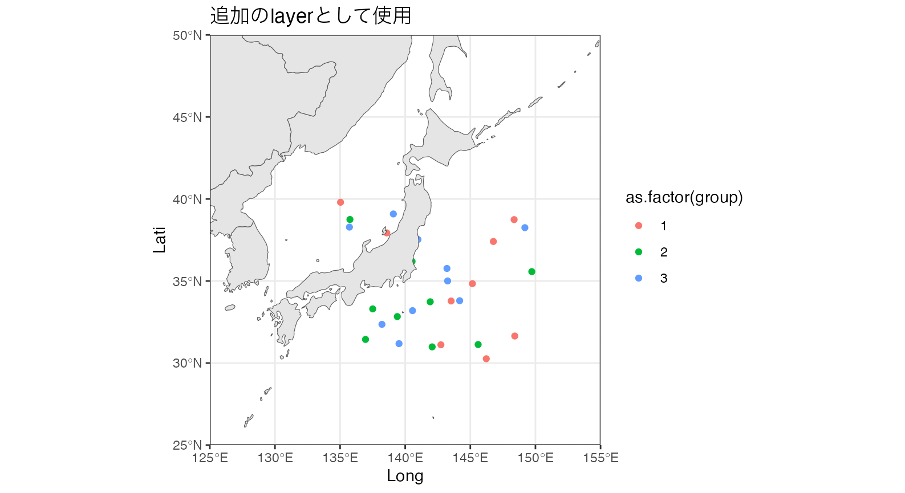

# install.packages("devtools")
# devtools::install_github("JK-junkin/frabento")
library(frabento)
library(ggplot2)
frabento::wmap_sf(lgl = c(130, 145), ltl = c(30, 45)) +
ggtitle("デフォルト解像度地図を拡大") +
geom_point(aes(x = 135, y = 35), color = "red")
frabento::wmap_sf(lgl = c(130, 145), ltl = c(30, 45), sf_resol = 10) +
ggtitle("高解像度地図 (10 km規模) を拡大") +
geom_point(aes(x = 135, y = 35), color = "red")
frabento::wmap_sf(lgl = c(135, 155), ltl = c(30, 48), sf_resol = 10) +
theme_void() +
ggtitle("高解像度地図 (10 km規模) の切り抜き白地図")
df <- data.frame(Long = runif(n = 30, min = 135, max = 150),
Lati = runif(n = 30, min = 30, max = 40),
group = rep(1:3, each = 10))
ggplot(data = df) +
geom_point(aes(x = Long, y = Lati, color = as.factor(group))) +
wmap_sf(as_gg = FALSE, lgl = c(125, 155), ltl = c(25, 50)) +
ggtitle("追加のlayerとして使用")
jpn <- rnaturalearth::ne_countries(scale = 10, country = "japan") %>%
sf::st_as_sf()
wmap_sf(sfmap = jpn, aes(geometry = geometry)) +
theme_void() +
ggtitle("日本だけの白地図")